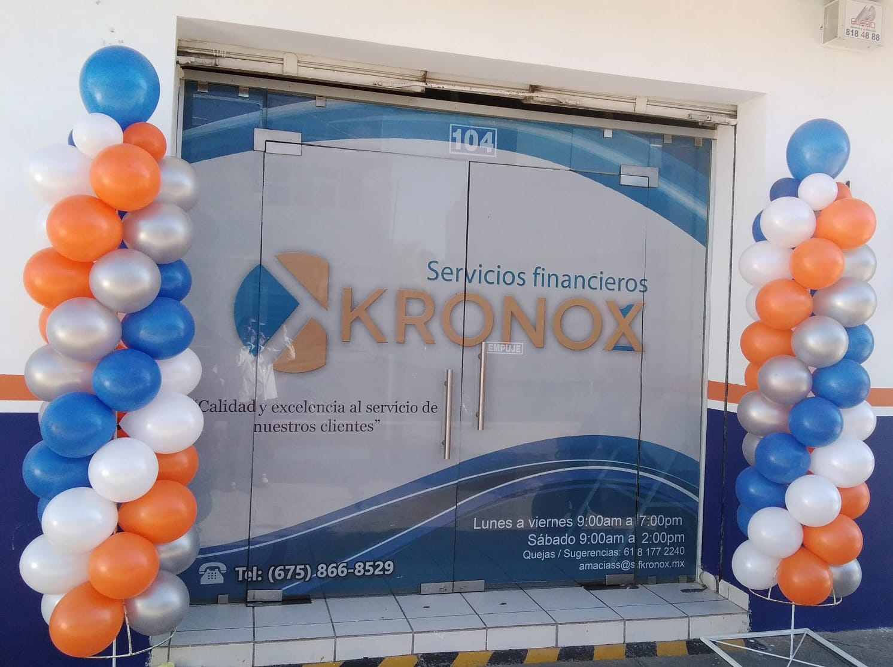

Somos una institución que promueve el desarrollo económico a través de servicios crediticios.
¿Qué es una SOFOM? Es una Sociedad Financiera de Objeto Múltiple que se dedica a otorgar créditos a personas físicas y PYMES, registrada ante la CONDUSEF.
Nuestra institución está autorizada por la CNBV y la CONDUSEF desde diciembre de 2015.
Promover el desarrollo económico mediante servicios crediticios con seguridad y compromiso.
Posicionarnos como líderes regionales en servicios financieros, apoyando al sector productivo.
Documentación del cliente y aval:
Teléfonos: 675-866-8529, 675-105-9555 (WhatsApp)
Emails:
Ubicación: Emiliano Zapata No. 104, Zona Centro, Vicente Guerrero, Durango, C.P. 34890